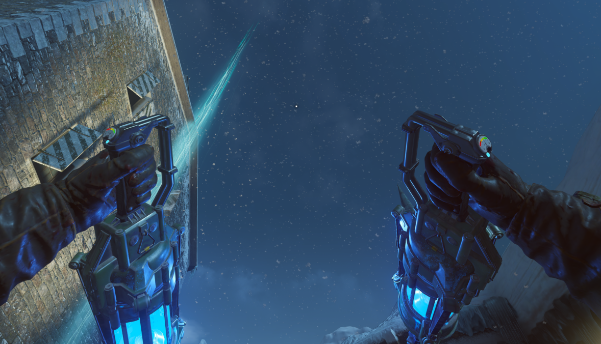
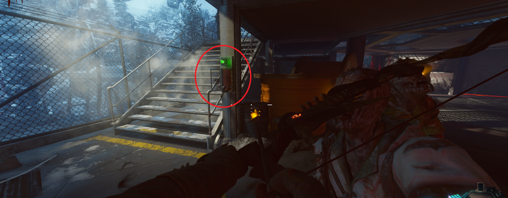
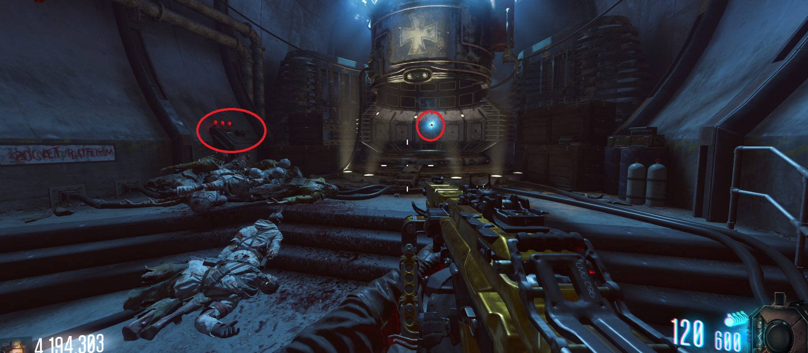
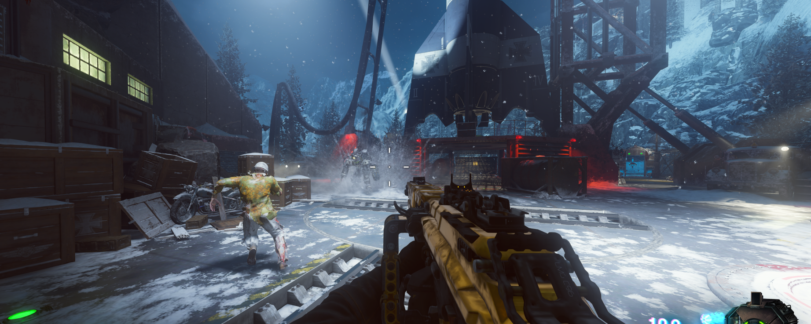
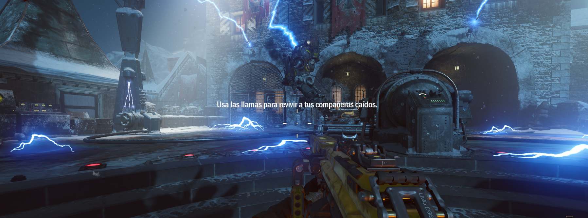
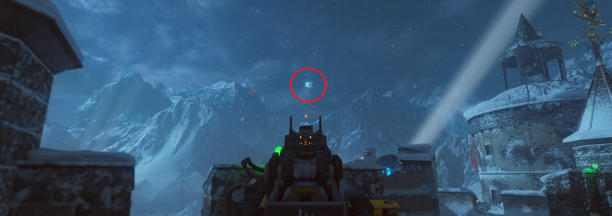
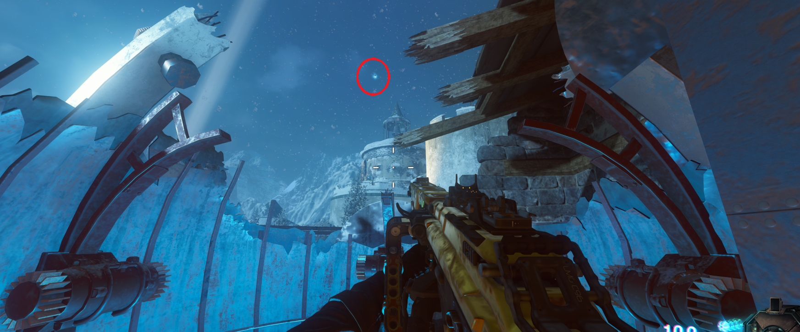
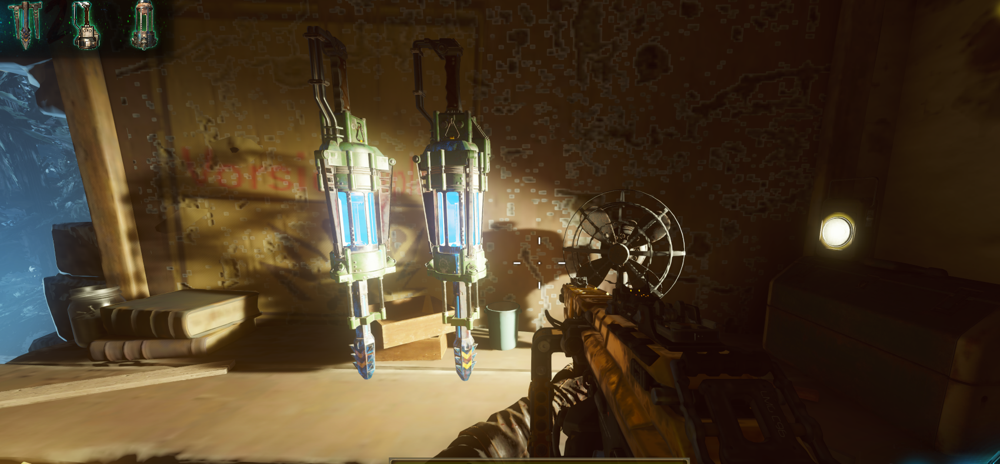

Ragnarok (Der Eisendrachen)

Primera pieza: Tendremos que esperar a que sean las pruebas del cohete y bajaremos esta palanca.

Rápidamente entraremos en la zona segura, antes de que se cierren las puertas y esperaremos para accionar un botón, cuando las tres luces se pongan en verde. La pieza aparecerá en el teleporter.

Segunda pieza: Tendremos que matar a un panzer y este nos la dará al morir.

Tercera pieza: Tendremos que matar un grupo de zombies con la trampa tesla. También contará si matamos a un panzer, y así obtendremos dos piezas a la vez .

Para recoger esta pieza miraremos al cielo y la encontraremos en el aire .

Utilizaremos la lanzadera que pase por encima de la pieza (puede cambiar), y la recogeremos.

Fabricar: Por último iremos a cualquier mesa de fabricación y las construiremos .
